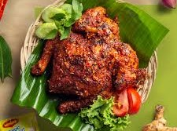

Resep Ayam Bakar Taliwang

Ayam Bakar Taliwang adalah hidangan khas dari Lombok, Nusa Tenggara Barat, yang terkenal dengan rasa pedas, gurih, dan aroma khas dari bumbu rempahnya. Menggunakan ayam kampung muda yang dibakar setelah dimasak bersama bumbu halus seperti cabai, bawang, tomat, dan terasi, sajian ini menghadirkan cita rasa otentik yang kuat dan menggoda.
Setiap gigitan menyajikan perpaduan sempurna antara pedasnya cabai, manisnya gula merah, serta kelezatan daging ayam yang empuk dan juicy. Cocok disantap dengan nasi putih hangat, plecing kangkung, dan sambal terasi. Ayam Bakar Taliwang bukan hanya makanan — ini adalah warisan rasa dari tanah Lombok.
Bahan-bahan:
1 ekor ayam kampung muda (belah jadi 2, tekan hingga pipih)
2 sdm air jeruk limau
1 sdt garam
1 sdt gula merah
2 sdm minyak goreng (untuk menumis)
150 ml air
Bumbu Halus:
5 siung bawang merah
3 siung bawang putih
10 buah cabai merah keriting
5 buah cabai rawit merah (sesuai selera pedas)
1 buah tomat merah
1 sdt terasi bakar
½ sdt garam
1 sdm gula merah serut
Cara Membuat:
Marinasi Ayam:Lumuri ayam dengan air jeruk limau dan garam. Diamkan selama 15–30 menit agar meresap.
Tumis Bumbu:Panaskan minyak, tumis bumbu halus hingga harum dan matang.
Masak Ayam:Masukkan ayam ke dalam tumisan bumbu, tambahkan air. Masak ayam hingga bumbu meresap dan air menyusut (sekitar 20–30 menit)
Bakar Ayam:Bakar ayam di atas bara api atau grill pan sambil dioles sisa bumbu hingga ayam matang dan sedikit gosong (karamelisasi bumbu).
Sajikan:Sajikan hangat bersama nasi putih, plecing kangkung, dan sambal terasi.